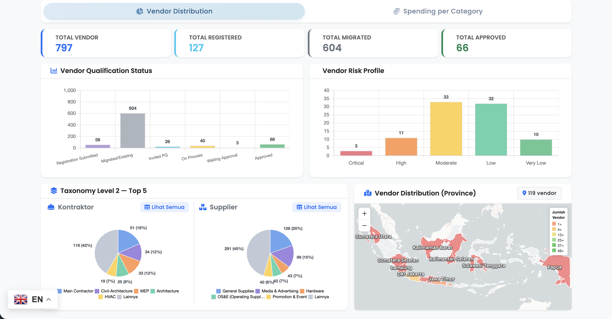
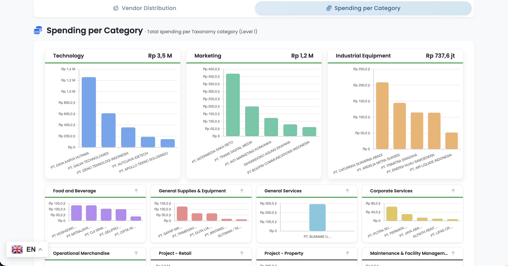
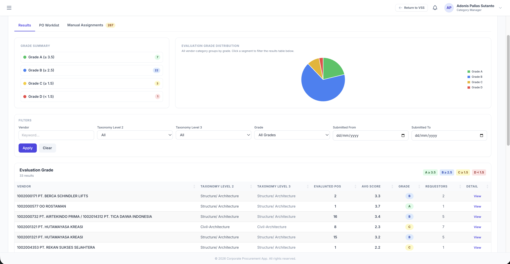
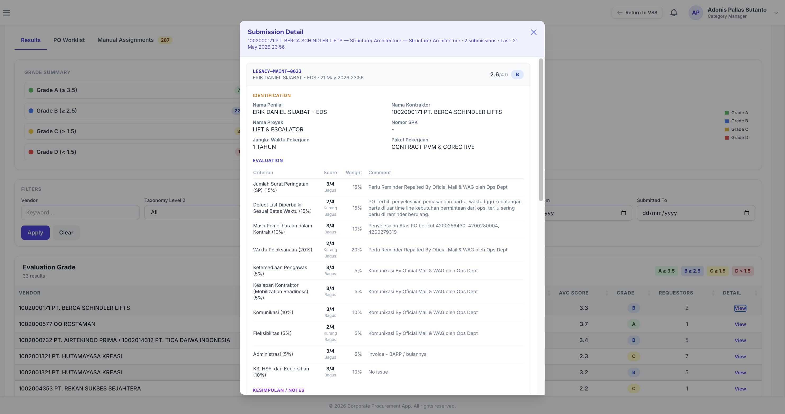
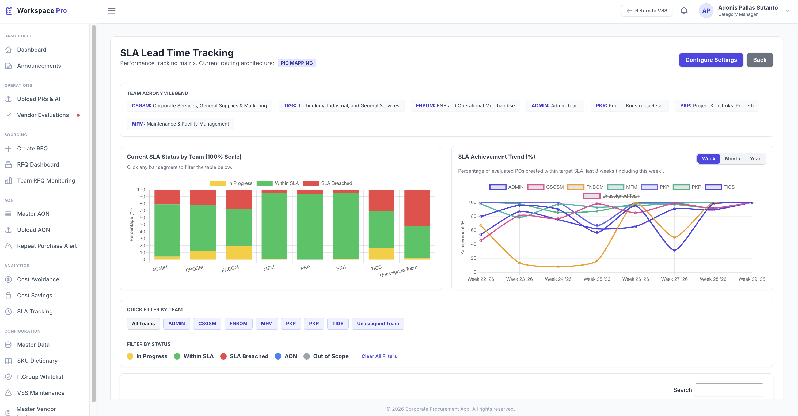
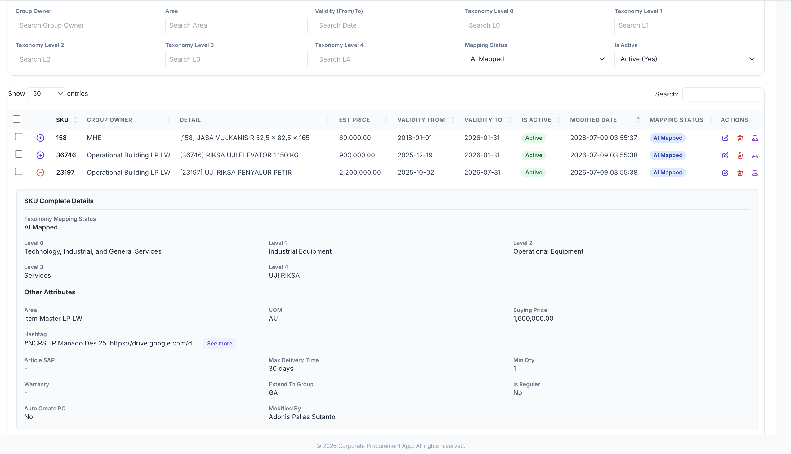
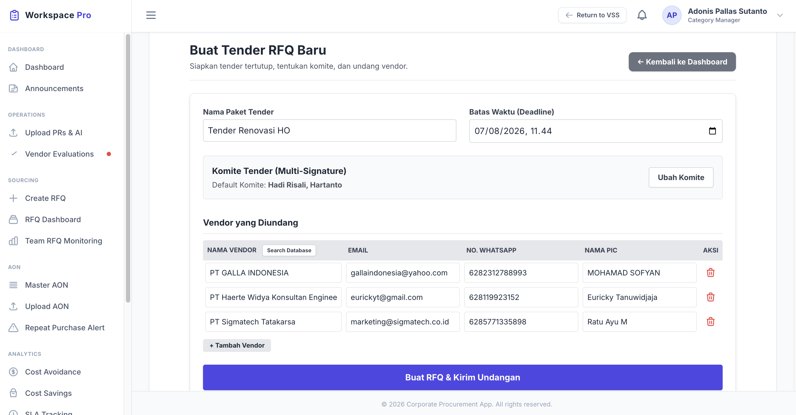
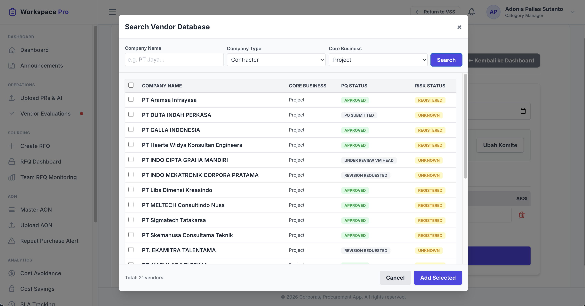
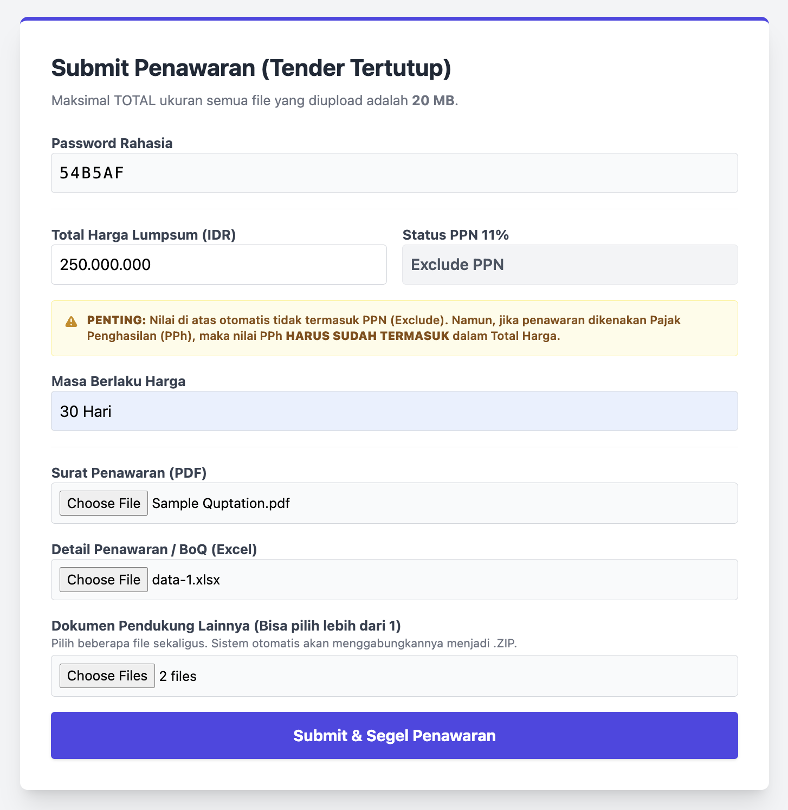
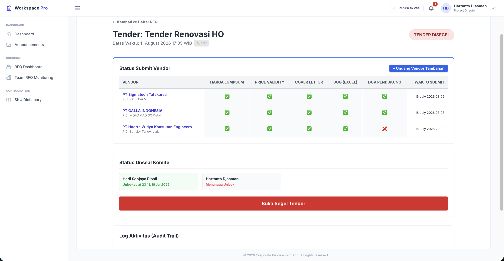

Corporate Procurement 2026
Menampilkan sebaran vendor di seluruh Indonesia berdasarkan skor risiko dan taksonomi.

Memetakan posisi vendor sebagai mitra strategis berdasarkan taksonomi pengeluaran.

Penilaian performa secara kualitatif dan kuantitatif berdasarkan pengiriman barang dan penyelesaian jasa.

Kemudahan bagi pengguna untuk mengisi penilaian performa vendor langsung ke dalam sistem.

Dashboard transparan untuk memastikan layanan pengadaan yang lebih cepat dan selalu tepat waktu.

Membantu pengguna mencari item yang relevan, serta memetakan taksonomi secara otomatis ke tim pengadaan yang tepat.

Menjamin proses tender yang adil dan transparan melalui pembukaan segel penawaran yang aman.

Menghubungkan RFQ dengan data vendor untuk memitigasi risiko sejak tahap awal tender.

Memudahkan vendor untuk mengisi penawaran komersial langsung melalui sistem VSS.

Pembukaan segel tender oleh komite untuk meninjau rincian penawaran secara kredibel.

by Corporate Procurement